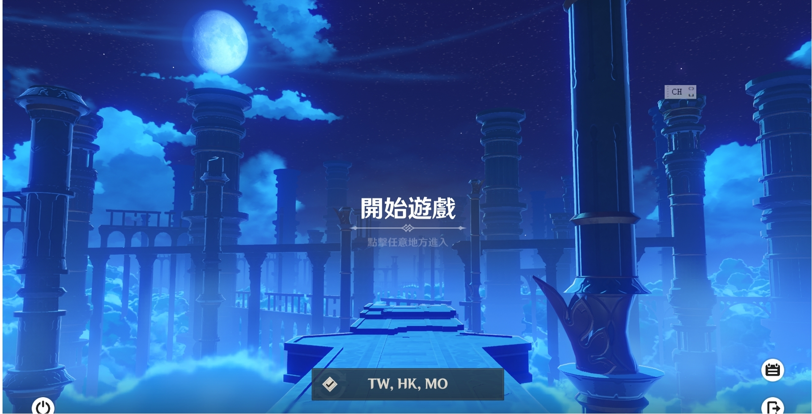

原神好玩在哪裡?
1. 美術風格不易3D暈 對一位容易3D暈的玩家來說 不容易3D暈的畫風就能打開新的體驗 會覺得自己也融入到這個世界中 2. 簡約華美的畫風 原神處處皆美景 3. 劇情豐富自然 許多遊戲的劇情就是拿到什麼東西、打敗什麼敵人 但是原神的劇情就像講一段故事 4. 人物美觀、衣服別緻 每個角色感覺都有精心設計過 社群也常會有些人物的二創 只是人物越來越多都快認不得了 希望之後的角色不會變調 5. 到處都有東西拿 身為一位囤囤鼠玩家 所過之處一定變成荒蕪一片 6. 活動、卡牌、各種互動要素 能用原神戒掉其他遊戲 而且還有多人模式下常有意想不到的驚喜 最後小攻略: 雷神2命+水龍1命兩隊，能過深淵12層滿星